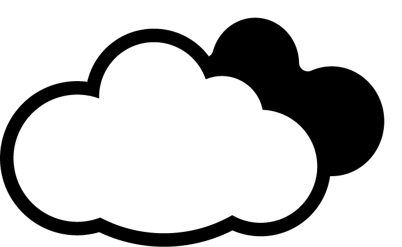
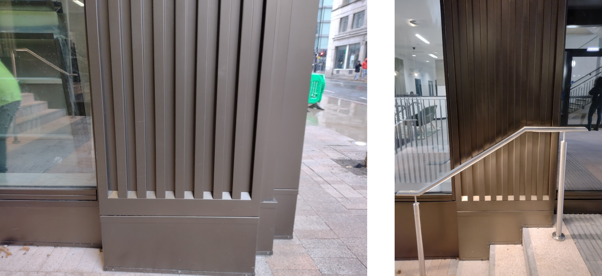
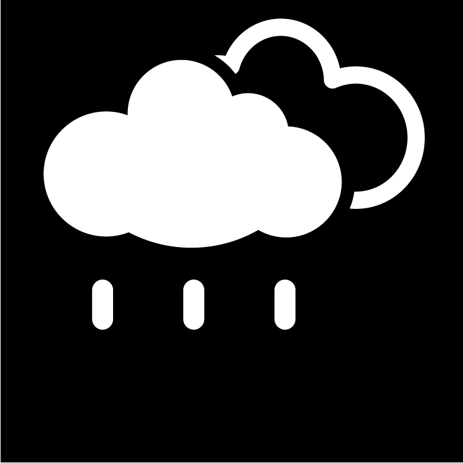
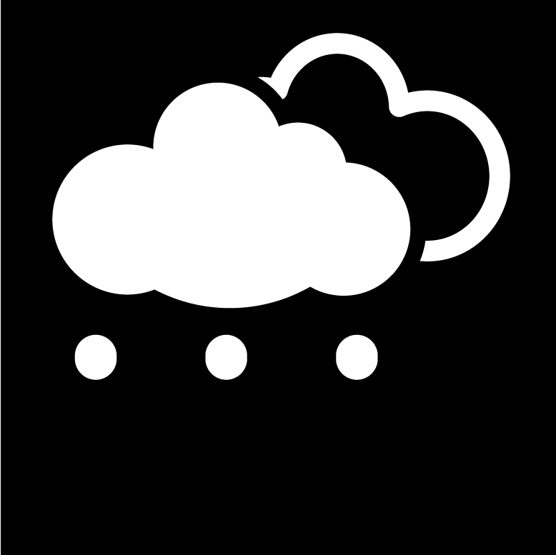
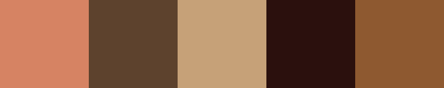
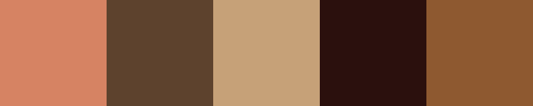

The first few photographs were taken inside and just outside Benzie building. My eye was
immediately
caught by the metal framework of the staircases and bridges, within which numerous letterforms
could
be made out.
Benzie Building, M15

After leaving the building, the striking arched windows of the back of the Grosvenor building
quickly caught my eye, forming the shape of a lowercase m. I knew from then that I
definitely wanted to take lots of photos of parts of buildings where letterforms could be found.
Manchester Metropolitan University, M15

Walking up Oxford Road, I began to notice letter shapes in a variety of places, especially in
street furniture, looking at it in a way I never had done before. I experimented with the
negative space of the blank sky around a lamppost, perhaps forming a G.
Oxford Rd, M1

The recently-built Circle Square development had some interesting architectural finishes, with
textured metal creating some interesting shapes and perhaps hints of letters.
Circle Square, M1

Around the corner was a delightful old tiled pub, where I found a hook attached to the wall
which formed a c. I also photographed some of the road markings, where the double yellow
lines formed various letterforms in positive and negative space.
Charles St, M1

The smaller buildings and the pubs and bars of the Gay Village offered a chance to look at some
smaller shapes and details, such as the corner of a frame, or the finial atop a fence.
Gay Village, M1

The backstreets behind Piccadilly were home to bits of detritus, and less modern, clean
buildings, which made for more interesting photographs and letterforms.
Sackville St, M1

I found that the more modern buildings around the Arndale are less interesting to photograph and
contain far fewer details which resemble letterforms. One exception was the curious spire over
the National Football Museum, and the anti-skateboarding spikes on the benches in front, which I
thought had an interesting shape. I also found what I believe was half the base of a traffic
cone, which looked a bit like a D.
Cathedral Gardens, M4

RESEARCH BREAK


Flaner
Simashev has made an alphabet out of architectural forms and shapes. I think it looks
excellent.
I really like the use of parts of buildings, especially the staircases. It reminds me of
the Bowellist
architectural movement, where the services, such as pipes and lift shafts, go on the
outside of the
building, most famously at the Pompidou Centre in Paris or the Lloyds building in
London.
Simashev has managed really effectively to balance having a fun, playful typeface,
without compromising
on legibility.
I like that there's two versions, a filled and an outlined variation. It shows the
versatility of
Simashev's typeface. Each letter is made up of a few common elements, but there's enough
variation that
they all feel different rather than too repetitive.
Around the corner was the impressive bronze statue of Mahatma Gandhi. I saw that the carvings of
his fingernails made some interesting shapes, such as a C. The sign about him made an
r.
Cathedral Yard, M3

I crossed the Irwell, where a somewhat abandoned and uncared-for square presented me with more
letterforms in the paving and walls.
Greengate, M3

RESEARCH BREAK


Found Font for Liverpool Biennial 2018
Elliman is a designer who has spent years collecting "bits" - assorted objects he's
picked up from all
over - and producing a typeface called Found Font. It was used as part of the branding
for the Liverpool
Biennial arts festival in 2018.
Elliman's habit of collecting started back when he was young and living in Liverpool;
his journey as a
designer has been informed by the places he's lived and travelled, picking up detritus
along the way to
make letterforms out of.
His work really appeals to me. I really like the utilitarianism of it all; taking
objects which are
designed a particular way because of their function, and using their unique shapes to
represent letters.
He plays about with scale, combining items of differing sizes into a consistent
alphabet.
The strength of Found Font, to me, is in the self-contained nature of each item. He
picks things up and
then makes them into individual letters. They're not a part of a whole, they are a
complete letterform
in one object, on a white background. This means that the whole font is incredibly
adaptable; when the
items have their colours taken away and are simply given a black fill, an incredibly
usable and unique
typeface is born.
In a show of poor planning on my part, I boarded a tram destined for suburbia without first
checking the weather forecast. A momentary hailstorm welcomed me to Moston, and the time spent
sheltering under trees in a park made me find this H-shaped bench, along with some
letters made out of bits of trees and the environment.
Broadhurst Park, M40

Deeper into the park I found two items which made good letterforms; the remains of an abandoned
bicycle, and a litter bin.
Broadhurst Park, M40

Just as I was about to leave the park, I saw a path weaving off to the right and down an old
staircase. I was intrigued, so followed it, to find it went down to a rickety boardwalk beside
the Moston Brook. The meanders were the obvious opportunity to try and find the shape of a
letter s, which I spent quite some time doing. There were some areas where trees had
fallen down over the path, out of which I tried to find some more letterforms.
Broadhurst Clough, M40

I left the park at the other end, on to a road bordering a cemetery, which was home to this
charming structure. The influences that Roman and Venetian architecture had on this (Catholic)
burial ground are clear to see. I saw various shapes, but the roofline and arch beneath are
particularly clear letterforms.
St Joseph's Cemetery, M40

I carried on walking up the hill where I found a park around a lake. The supports for the
benches have the shape of a Y or perhaps a T, depending on interpretation.
Boggart Hole Clough, M9

By this time, the rain had stopped and the sun was coming out. A double rainbow appeared; I
spent quite a while working out how to take a photo which could be used in this project. I
walked to another park, where the evening sun meant my body cast a long shadow on the grass,
forming an A. I also took a picture of a bench which had some similarity with a lowercase
t.
Nuthurst Park, M40

Whilst waiting for the tram back into the city, I noticed the contrast between the bright yellow
handrails and the white fencing. Playing with a bit of perspective, letters appear.
Failsworth tram stop, M35

Once I got back, I looked over the pictures I'd taken. I started to try and categorise them a
little, working out what letters I'd got and what I still needed. I saw that I had two main
themes: architecture and nature. I think it'd be a waste to try and stick to just one and scrap
the others at this stage; the photos I'm going to take will encompass both themes. Perhaps I
will make two alphabets.
The following day, I headed out, looking to take more photos for the project. I was particularly
interested in exploring more architectural letterforms, so I visited the John Rylands Library on
Deansgate. The beautiful old building had lots of detailing on every surface, which was great
for taking photos and finding letters.
The John Rylands Library, M3

RESEARCH BREAK

Uptown Chic
Hill is a photographer from the town of Ogden, Utah. Uptown Chic is based on the
Victorian style
architecture of the buildings near where she lives.
The colour scheme is lovely, and reflects the colours of the architecture in the town.
Her choices
convey the town's unique (in the USA) collection of buildings.
One of my favourite letterforms is the S, made from the spiral staircase. I also like
the E in the
negative space of the bricks.
My one criticism is that some of the letters aren't as legible when read in isolation.
Having A to Z on
the poster means that it is intuitive to understand which letter the next photograph is
going to be,
even if it would otherwise be difficult to recognise. This is something I'd like to
avoid on my
alphabet.
Rather suprisingly for the famously dry city of Manchester, it was raining again. Heavily,
in fact. I hopped on a tram and hoped it would clear by the time we got to the terminus at
Eccles.
Unfortunately it didn't, but I persisted anyway in attempting to find more stuff to photograph.
At the risk of turning this into a rant against the maintenance standards of Salford City
Council, I would like to note that the following images were taken on a 'path', and not, as it
may appear, a river. However, the ripples of the rainwater did make some lovely shapes, which
from a few angles look a bit like letters.
Eccles Parish Churchyard, M30

RESEARCH BREAK


Letter Play
Briggs is a photographer from Michigan. In Letter Play she takes parts of the built
enviroment and finds
letterforms in unexpected places.
Her photographs are taken from lots of different angles: overhead, straight on, to the
side, looking at
an angle... But all of them are presented in such a way that the letters of the final
piece are front
and centre.
The photos themselves are very nice and composed well, and I think her decision to edit
them all down to
be greyscale has paid off. It avoids the page being too colourful and detracting from
the main focus,
the shapes of the letters found in architecture around her.
I like that she has done three versions for each letter, I definitely think though that
this helps on
some of the letters to aid recognition where it might not be immediately obvious which
letter it's
supposed to be. My favourite letters are the Y in the underside of the floodlight, and
the M composed of
the arched windows.
I went off for a bit of a walk. Down into the Trafford Park, where there was nothing
particularly worth photographing, with a few exceptions:
• These rivets on the side of an electrical box, which make a fab B
• The roof of the back bit of the Trafford Centre, which could be an m (if you squint)
• An unusually bright pedestrian crossing, making an O, and
• A bit of string on the floor which made an s.
• These rivets on the side of an electrical box, which make a fab B
• The roof of the back bit of the Trafford Centre, which could be an m (if you squint)
• An unusually bright pedestrian crossing, making an O, and
• A bit of string on the floor which made an s.
Trafford Park, M17

I've got a lot of pictures so far, although not quite a full alphabet.
 
